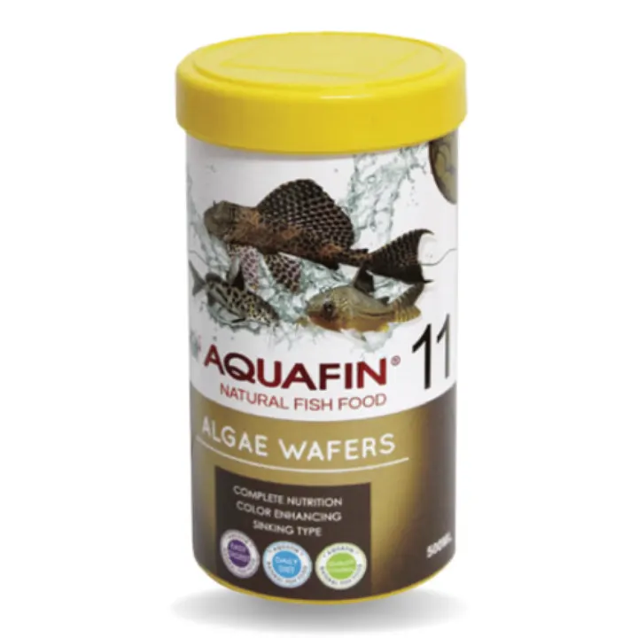
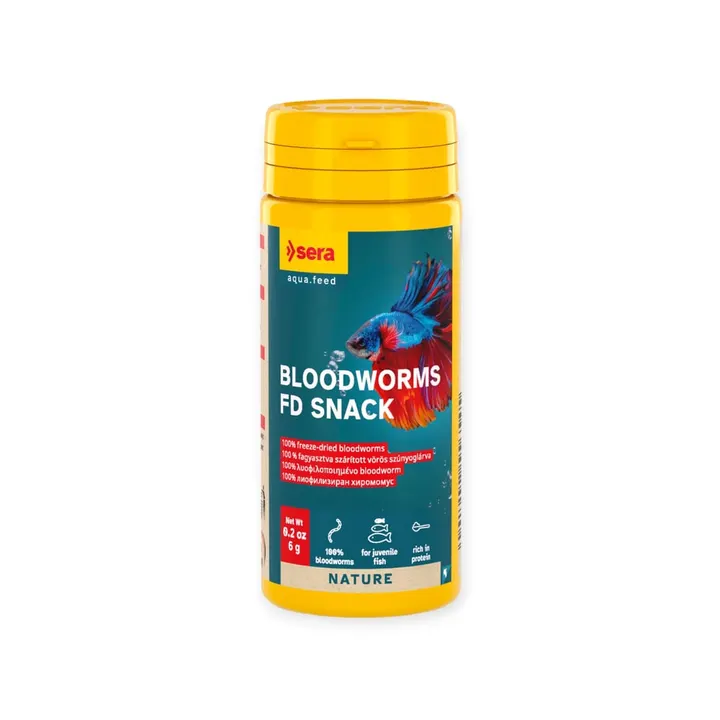

غير متوفر في اللقطة
الصورة من مجموعة أكوا هافن01 / 01
الطعام والتغذيةعن هذه القطعة ↓
ديدان دم Sera FD مجففة بالتجميد – 6 جم
ديدان دم 100% مجففة بالتجميد — سناك طبيعي غني بالبروتين تحبه الأسماك الصعبة، ومثالي لتحضير الأسماك للتفريخ.
٣٥ ر.س
متاح في اللقطةسعر مرجعي للمعاينة. الطلب والدفع غير متاحين في هذه النسخة.
نظرة أقربعن هذه
عن هذه
القطعة.
الوصف والخيارات كما وردت في المجموعة المرجعية.
تفاصيل المنتج
ديدان دم Sera FD مجففة بالتجميد – 6 جم — ديدان دم 100% مجففة بالتجميد — سناك طبيعي غني بالبروتين تحبه الأسماك الصعبة، ومثالي لتحضير الأسماك للتفريخ.
المميزات
- ديدان دم فقط (100%) بدون أي إضافات
- بروتين عالي وقبول ممتاز من الأسماك
- مثالي للأسماك الصعبة، وأسماك التفريخ، والصغار
- يطابق الغذاء الطبيعي للأسماك
- تجفيف بالتجميد يحافظ على القيمة الغذائية
طريقة الاستخدام
قدّمه عدة مرات بالأسبوع بين الوجبات، وبكمية تأكلها الأسماك خلال وقت قصير.
المواصفات الأساسية
- العلامة: سيرا (Sera) – ألمانيا
- نوع المنتج: سناك طبيعي مجفف بالتجميد
- الحجم: 50 مل (6 جم)
- مناسب لـ: كل أسماك الزينة، خصوصاً اللاحمة والصعبة بالأكل
- رقم الصنف: 01130
المكونات
ديدان دم (100%).
التحليل الغذائي
بروتين خام 41.0% · دهون خام 4.0% · ألياف خام 3.5% · رطوبة 7.0% · رماد خام 11.0%
المصدر: الموقع الرسمي لشركة sera الألمانية.